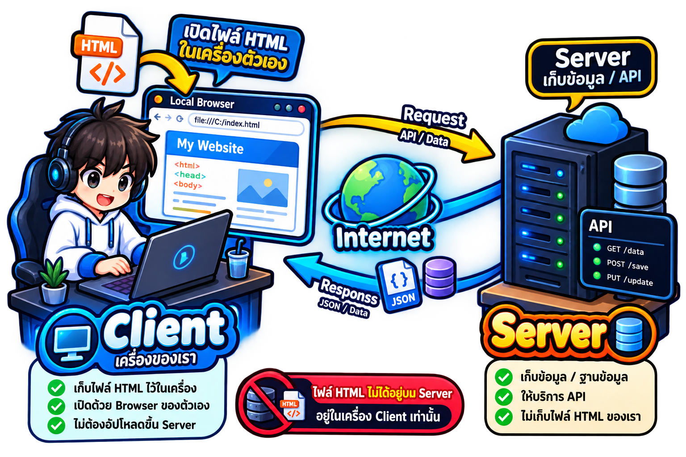
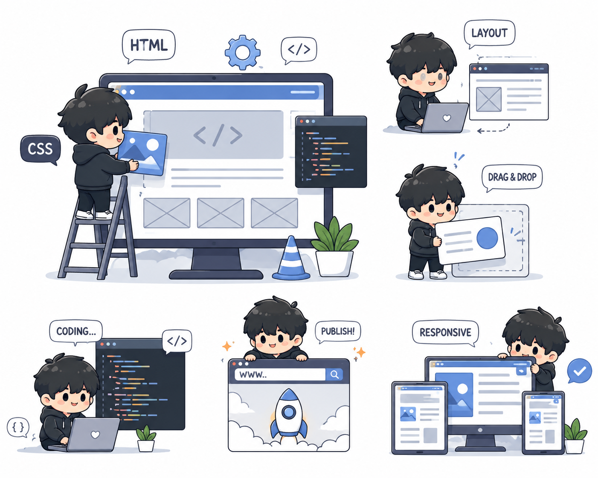
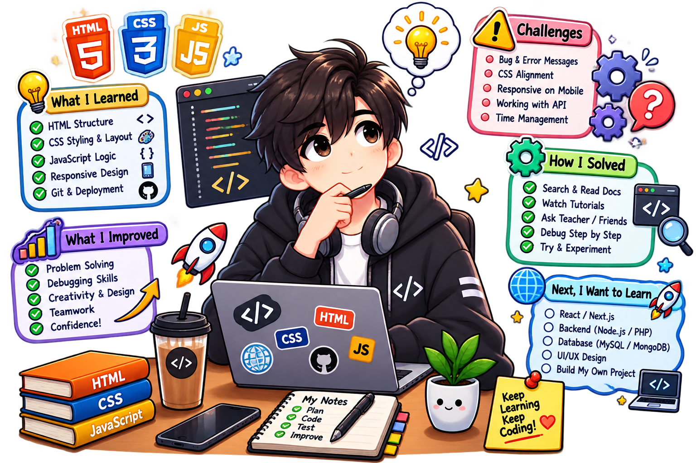

What I Built
ผมสร้างเกี่ยวกับแฟ้มสะสมงานเพื่อการเรียนรู้โดยมีโครงสร้าง header ในการแนะนำตนเอง main สำหรับงานในการเรียนรู้ และ footer เป็นส่วนของผู้จัดทำ โดยในการเปิดเว็บไซต์จาก html ที่อยู่ในเครื่องของตนเอง จะมีเพียง client ที่ทำหน้าที่ประมวลผลหน้าเว็บไซต์ขึ้นมาเพียงเท่านั้น เนื่องจากไม่มีการส่ง Request ไปยัง server ภายนอกจึงไม่ต้องใช้ internet แต่เมื่อกดไปที่ลิงค์ instagram เครื่องของ User จะทำหน้าที่เป็น client และส่ง Request ผ่านอินเทอร์เน็ตไปยัง Server ของ instagram จากนั้น Serverจะส่ง Response กลับมาเพื่อแสดงหน้าเว็บไซต์ instagram
How I Built It
เว็บนี้พัฒนาโดยการเรียนรู้ของตัวผมเองโดยผมมีวิธีการสร้างเว็บไซต์ดังนี้
- หาเว็บ Portfolio ที่น่าสนใจและศึกษาโครงสร้าง
- ออกแบบและวางโครงสร้างของเว็บไซต์
- ลงมือเขียนโค้ดเพื่อสร้างเว็บ
- ศึกษา css properties และ HTML elements เพิ่มเพื่อทำให้หลากหลายและสวยงามและศึกษาโดยใช้เครื่องมือดังนี้
- chat GPT ออกแบบภาพประกอบและสอบถามสิ่งที่ไม่เข้าใจเพื่อเรียนรู้เพิ่มเติม
- w3school ศึกษาเกี่ยวกับ css properties
- figma หาตัวอย่างเว็บไซต์ที่สนใจ


reflection
ปัญหาหรือความท้าทายที่พบคืออะไรและแก้หรือรับมืออย่างไร : ปัญหาที่พบเจอคือการที่รู้จักตัวของ CSS น้อยเกินไปและออกแบบเว็บไซต์ได้ไม่สวยและไม่สามารถทำตามดีไซน์ได้ทำให้เกิดปัญหาเช่น ไม่รู้ว่าจะทำยังไงให้รูปอยู่ขวามือแล้วข้อความอยู่ซ้ายมือหรือการสร้างเว็บยังไงให้สวยงามตรงตาม Requirements วิธีแก้ไขคือการค้นหาข้อมูลเพิ่มจากแหล่งเรียนรู้และลงมือแก้ไข
จากการทำ A1 นี้ เข้าใจอะไรเกี่ยวกับการพัฒนาเว็บไซต์มากขึ้น : เข้าใจการทำงานของ HTML และ CSS โดยผมได้รู้จัก HTML elements และ CSS properties ใหม่ๆที่ไม่เคยใช้ เช่น display, outline
หากได้พัฒนางานนี้ต่อ อยากปรับปรุงหรือเพิ่มอะไร และเพราะอะไร : อยากปรับปรุงเรื่องโครงสร้าง HTML เพื่อให้คนอื่นมาใช้สามารถอ่านออกได้เข้าใจเช่นเพิ่มคอมเม้นหรือการจัดรูปแบบ และการออกแบบหน้าเว็บไซต์ให้สวยขึ้นและมีลูกเล่นมากขึ้นกว่านี้